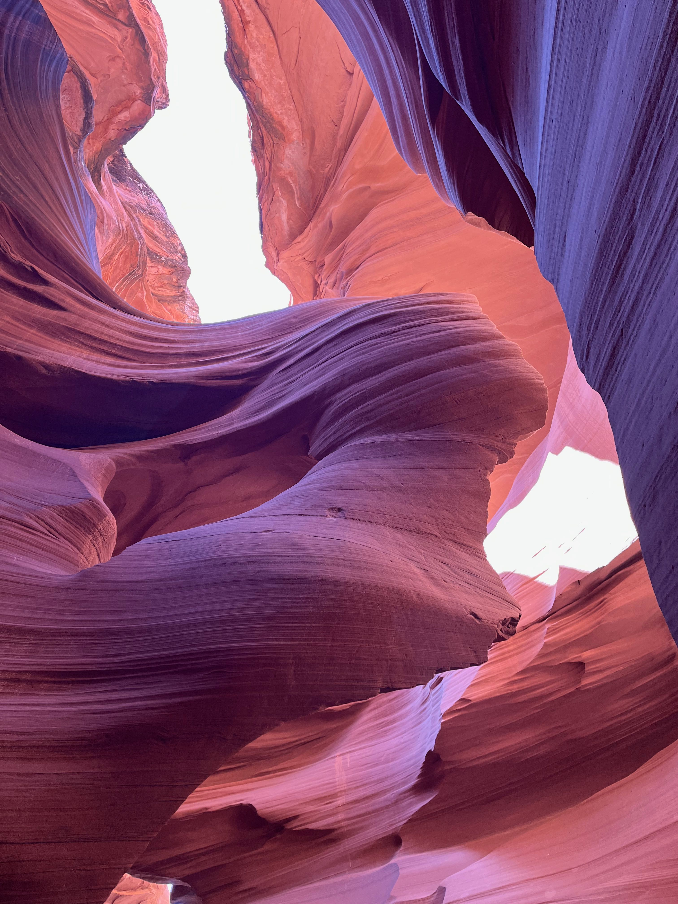

美国出差日记 - 3月
3.11 晚上约好了几个前同事去中餐馆吃饭，来了6个人。littlefucker带家属开车50km也来了。没有预定，但是没有想到人特别多，排队快100分钟，迟到了晚上差不多22:00. 大家聊得比较欢乐，我也学到了不少东西。一顿下来6个人共计540，AA下来90$感觉有点心疼。在美国赚钱美国花还是好。
3.12 切换到了夏令时，发现自己比平时少睡了1个小时。早上雨特别大，在家里继续整理了一下之前没有完成的工作，下午还去单位待了3个小时，回来的时候天晴了，和murphy在附近的Bedwell Bayfront Park走了一下。晚上点了分泰国菜，味道还可以。
3.13 - 3.17 上班.
3.17 这天搬到了Country Sharon Apartment这个地方，这边公寓有点老旧，但是据uber司机说非常安全。之前anton menlo park离单位比较近，而且也是全新公寓，感觉那边还是更好点。
3.18 中午和之前几个友盟同事聚餐，安排的地方我后来才发现，和我一天被拉去的地方在一条街上。zikai回城里面还想做samTrans, 好像是湾区的城际铁路，不知道怎么坐，能够去哪些地方。我点了差不多25$, 但是AA下来50$, 有点心疼。下午和zzt聊了下这边的生活情况，晚上去了趟旁边的safeway买了些日用品。
3.19 早上起来工作了一阵子，中午想去safway办个membership card, 但是现在都是手机号就行没有实体卡。我大概看了下membership price好像也只是对某些特定商品有用，大约8$可以节省1$这个样子。驾照翻译件搞好了，等着去租车了。下午约好去和同事打个乒乓球，地点稍微有点远打车36$了，希望晚上他能送我到附近的地方。地址是ICC table tennis, 结果打车到了ICC，相距还比较远大约有3km这个样子，晚上和他吃饭，看完联赛就回来了。
3.20 - 3.24 上班
3.23 今天陪同事去换车又租车，在SIXT上租的，接待我们的是个说汉语的小哥，感觉非常亲切。在加州这边是不需要翻译证件的，国内原件就行。车辆是完全保险的，出了问题打电话就行，道路救援也是免费的。还有就是如果是同事关系的话，可以在这个车上多挂一个驾照，这样就可以两个人开车了。
3.24 公司帮助申请H1B，但是截止日期就是在3月中旬，没有办法，只能等明年了。
3.25 上午在家调试代码和测试性能，把减少内存代码的PR搞完了。下午去机场接hailei, 晚上在redwood city找了一家日式铁板烧吃饭。晚间回来还聊了一会天，说说国内外情况的比较。
3.26 上午去milpitas city爬了一下mission peak. 上山走的是一个开出的路，下山想走走不同的路，结果就到一条野路上了。特别费膝盖和大腿，翻过了两道铁丝网才出去，发现结果还走错了。重新翻铁丝网进来，找了一条看上去像是回到主路的道，最后才走出去。然后去附近的omega coffee shop吃了个比较正宗的美式午餐（coffe + pork/beef + scrambled egg + potate），加上tip共计30$，量大有点撑。
3.27 - 3.31 上班，31号晚上坐飞机到了las vegas, 住在中心城区的excalibur, 酒店特别陈旧，除了基本的洗浴和睡觉地方，什么都没有（插座很少，没有烧水的，没有大灯）。办理入住之后差不多10:30了，但是晚上还是坚持花了2个小时去附近的地方走了走，往new york/cosmopolitan/horseshoe方向走，走到了Bellagio的音乐喷泉和附近的pairs effiel然后就往回走。路上一股奇怪的味道，同事说那个就是大麻的味道。回来到头就睡。
4.1 早上5:00起床，6:00开始坐车往下羚羊谷(lower antelope valley)方向走。那个地方是印第安人管辖的范围，距离vegas差不多有5个小时的车程（单程）。整个过程14个小时，车上差不多就有10个小时，2个多小时在下羚羊谷，1个小时在马蹄湾。回来的时候感觉屁股疼。整个行程需要穿过3个州（nevada，arizona, utah），但是最后还是在arizona state. 据导游说那个地方特别多的grand canyon, 所以都叫做grand canyon state. 那边大约就是上下羚羊谷，lake powell, 马蹄湾，grand canyon, 以及glen dam几个景点，但是都特别分散，那边大地特别地荒凉。羚羊谷是flash flood重刷出来的，最后流入到了lake powell，所以凡是涝季或者是下雪都会封闭，前段时间一些人来trepassing结果天气不好就被冲走了，我们这次比较幸运赶上比较好的天气。晚上去附近的luxor casino看了一下fatansy show.

4.2 早上9点出发，做了一下free tram(excalibur -> mandalay bay). 然后跑到mgm grand里面找到了monotrail. 特别难找，我觉得赌场逻辑是这样的：在这里设置特别大规模的赌场，然后配上酒水服务以及各种餐饮。你会走累或者是迷路的时候，这个时候就需要停下来消费一下，而且casino里面消费都特别高。monotrail这个是付费的，单程6$, 但是其实你不出来其实是可以一直坐的。本来还想在外面走走的，太阳太大了，又累又热，毕竟这就是一个在沙漠中的城市。导游说这个沙漠叫做mojave, 我发现好多单词中j都发h的音，比如san jose, mojito.下午1点左右就打车到了harry reid 机场，等6:30左右的飞机。